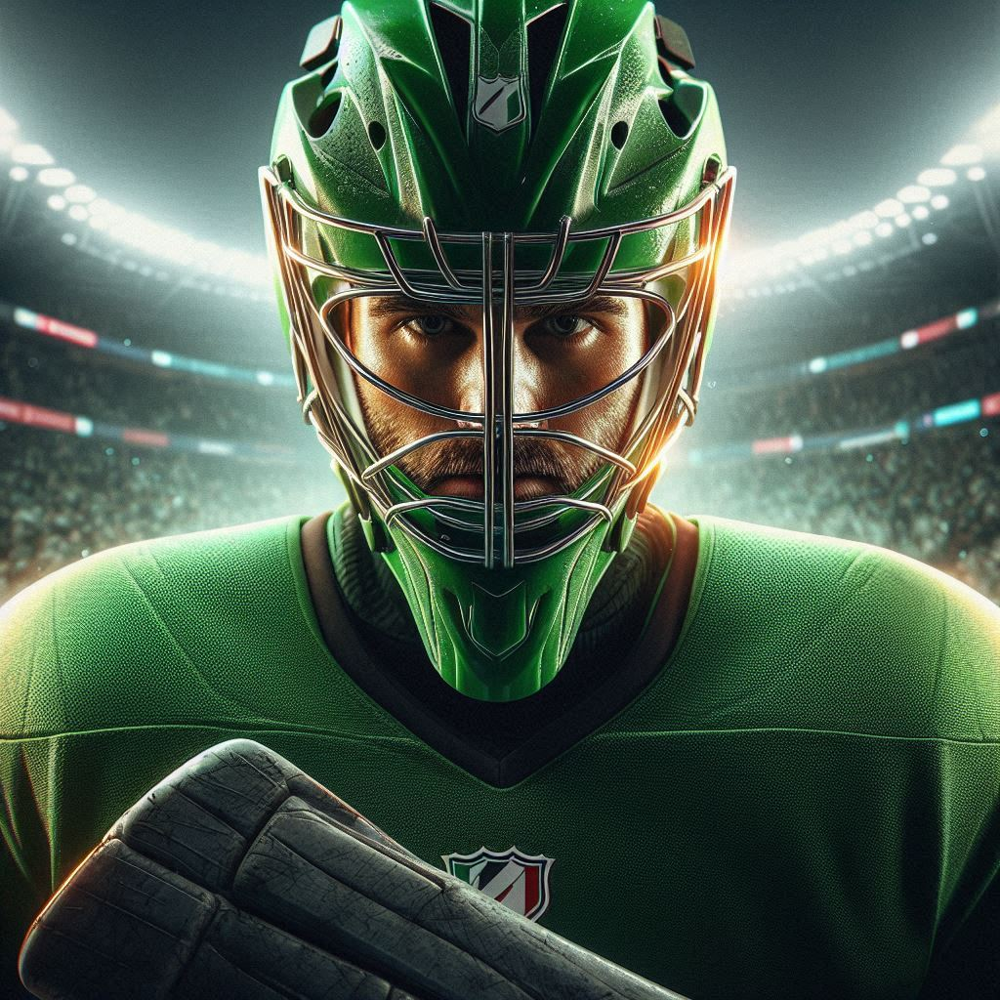
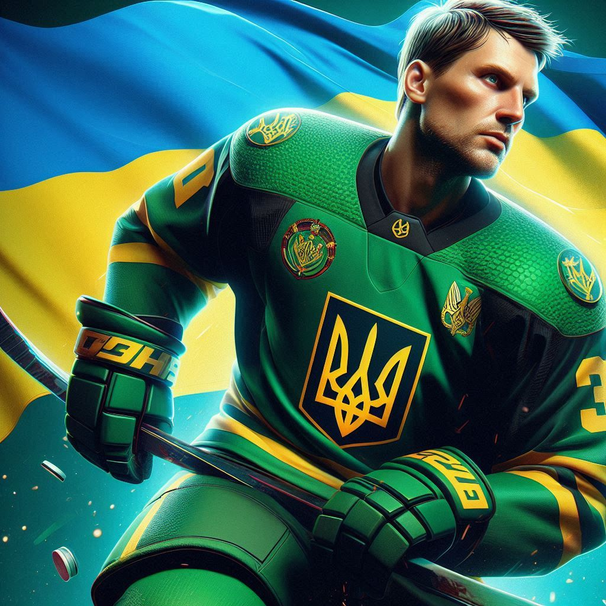
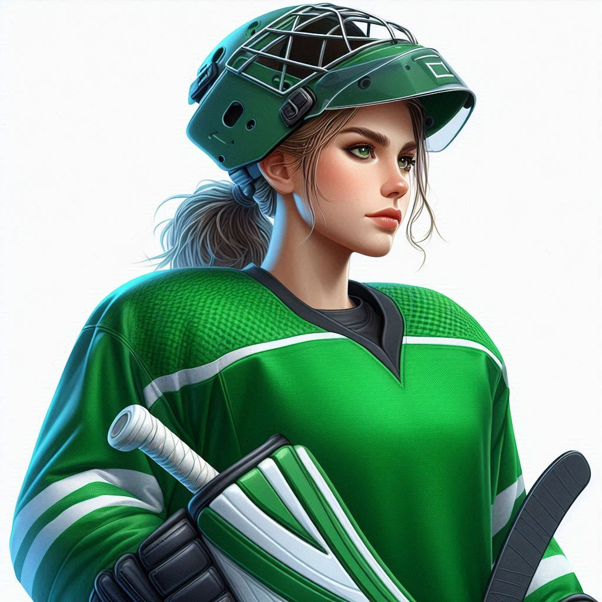

Команда "Зелений Барс" була заснована в 2021 році в маленькому містечку Іршава, розташованому серед зелених лісів і широких полів. Вона стала результатом мрії групи молодих хокеїстів, які прагнули створити команду, що відображала б їхній зв'язок з природою та любов до спорту. Назва "Зелений Барс" символізує силу, швидкість і грацію, які команди прагнуть демонструвати на льоду.
З моменту свого заснування "Зелений Барс" швидко здобув популярність серед місцевих уболівальників завдяки своїй енергійній та командній грі. Команда активно залучає молодь до хокею, проводячи тренування та воркшопи для дітей.
| Place | Team | Points | Wins | Loses |
|---|---|---|---|---|
| 1 | Green Bars | 90 | 9 | 1 |
| 2 | Team 2 | 70 | 7 | 3 |
| 3 | Team 3 | 60 | 6 | 4 |
| 4 | Team 4 | 50 | 5 | 5 |
| 5 | Team 5 | 40 | 4 | 6 |
Максим народився і виріс у Києві. З дитинства мріяв стати воротарем, і вже у 10 років потрапив до юнацької хокейної команди. Він швидко зарекомендував себе як сильний і надійний воротар, з дивовижною реакцією і вмінням передбачати дії суперників. Після кількох успішних років у місцевих клубах його запросили до "Зеленого Барса". Завдяки своїм лідерським якостям Максим став капітаном команди, і його впевненість на льоду завжди надихає інших. У вільний час він любить кататися на велосипеді та відвідувати природу.
Сергій народився у Сумській області, і його любов до природи, особливо лісів, відобразилася на його прізвиську. Він виріс в оточенні природи, де й почав грати в хокей на замерзлих озерах. Його потужна постава та агресивний стиль гри на льоду зробили його одним із найнебезпечніших нападників у лізі. Сергій постійно працює над покращенням своїх навичок і прагне допомогти команді виграти національний чемпіонат. Він також захоплюється риболовлею і часто організовує кемпінги для друзів та колег по команді.
Олена родом із Харкова і з самого дитинства мала сильний інтерес до спорту, особливо до хокею, хоч цей вид спорту і не був популярним серед дівчат у її місті. Її непохитний характер і бездоганна фізична форма допомогли їй пробитися в професійний хокей. Вона отримала прізвисько "Срібна Крига" за холоднокровність і впевненість, яку вона проявляє під час захисту команди. Олена також є активісткою за рівні права в спорті та працює тренером для юних хокеїсток.
